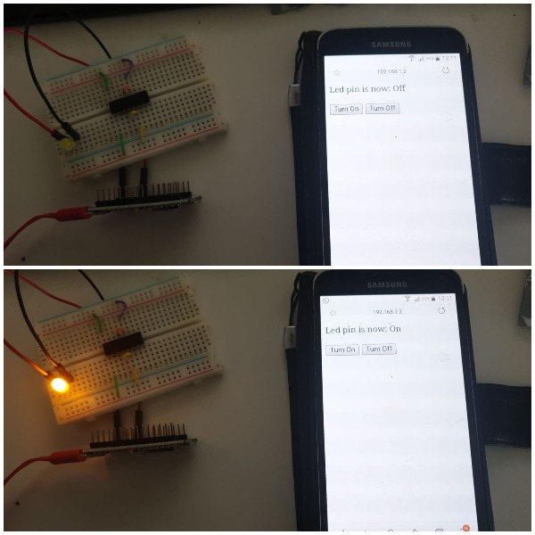

. . .
A year before I started college I had learned some very basic Java from a friend of mine, learning how to compile a program and say ‘hello world’ was about the extent of it. I had spent some time on CodeCademy doing JavaScript but could not really see where the whole process fit together. When I began formally learning in the first few years of university, I was experiencing programming with Java with GUI and databases, software design principles, eventually into design patterns.
In the later years of education, I was trained formally in C creating program's emulating disease vectors and infections along with parallel P-threading applications in the Linux OS. I have a lot of experience in C# with Unity for both university and personal projects. Then eventually moving into building Android applications for Arduino sensor controllers, Stateful RSS newsreaders with the Google Maps API. I have written some programs in Kotlin out of curiosity also. My experience of JavaScript developed into creating distributed network computing applications through NodeJS and JQueryMobile.
Having heard about the accessibility of Python, my first experience with python was some self-learning beginning over three years ago writing small programs in my free time, having a basis in Java I was used to the syntax of practical coding, but not having to compile was new. Python became a practical scripting tool for writing programs to solve challenges in CTFs. Simply using it as a calculator or convertor for hacking challenges to eventually attempting programming challenges. The formal experience I have had with python is largely writing RESTful web applications for cloud services, exploring machine learning libraries, data science tasks, algorithm design, and computer vision algorithms. The python web-based applications also included interactions with GraphQL and cloud storage. I have experience with writing applications in PHP and frameworks such as Symfony. These applications were based on the MVC model and interacted with a local database. They were often in the framework of an online store or a school voting website. I am also familiar with the Twig workflow and GitHub within PHP projects. I have also had a lot of experience with PHP for testing microcontrollers in the Xampp environments and running small servers from home for mini IoT projects.
